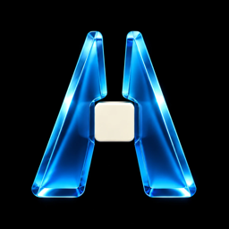
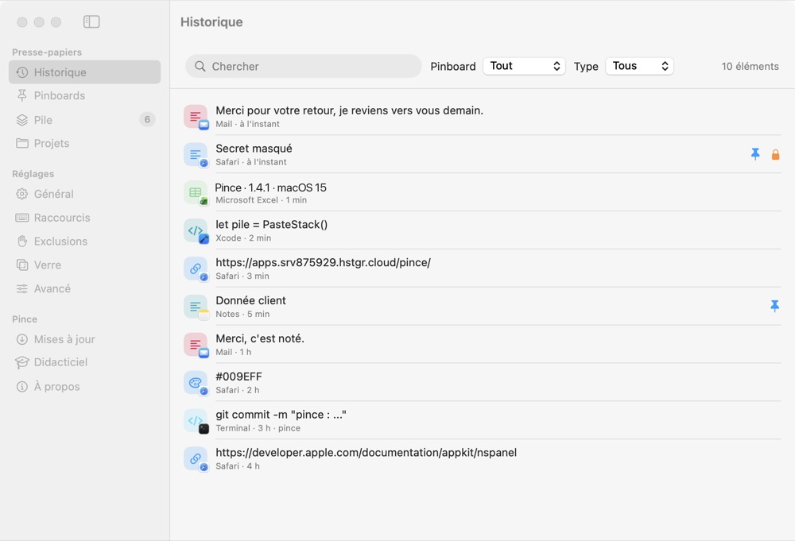
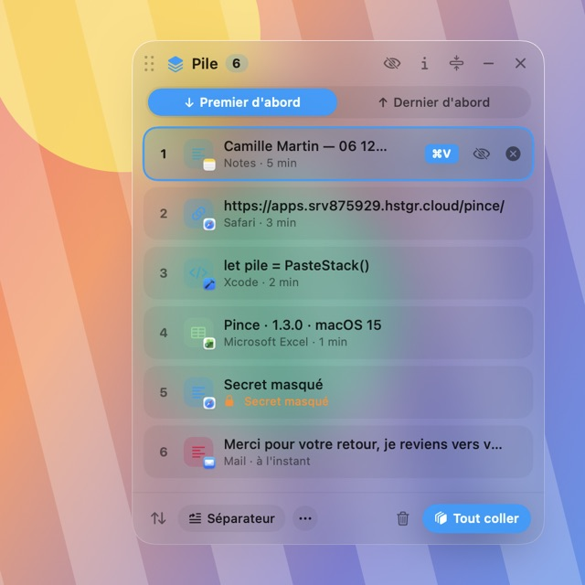
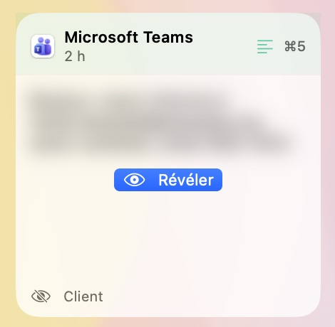

Pince garde tout ce que vous copiez : vous cherchez, vous collez d'une touche. Pour qui copie-colle toute la journée.
Gratuit, sans compte. Pince 1.4.1 · Mac à puce Apple, macOS 15 ou plus · rien ne quitte votre Mac
La pile : un ⌘V, une copie. Copiez trois choses, puis collez trois fois : chaque collage prend la copie suivante, dans l'ordre.
Rendez-vous demain 10 h, salle B.
✓ gardé⌘ C (Commande + C), comme toujours.
⇧ ⌘ V (Majuscule + Commande + V), puis tapez pour chercher.
↩ (Retour) colle la carte là où vous écriviez.

Textes, liens, images, fichiers, code : cherchable, épinglable, 90 jours par défaut (réglable).

« Tout coller » met la pile d'un coup, une cellule chacune dans Excel.

Données client floutées, clé d'accès effacée après 2 min, invisible en partage d'écran.
pince dans Terminal.~/Library/Application Support/Pince, lisible par votre compte seul.